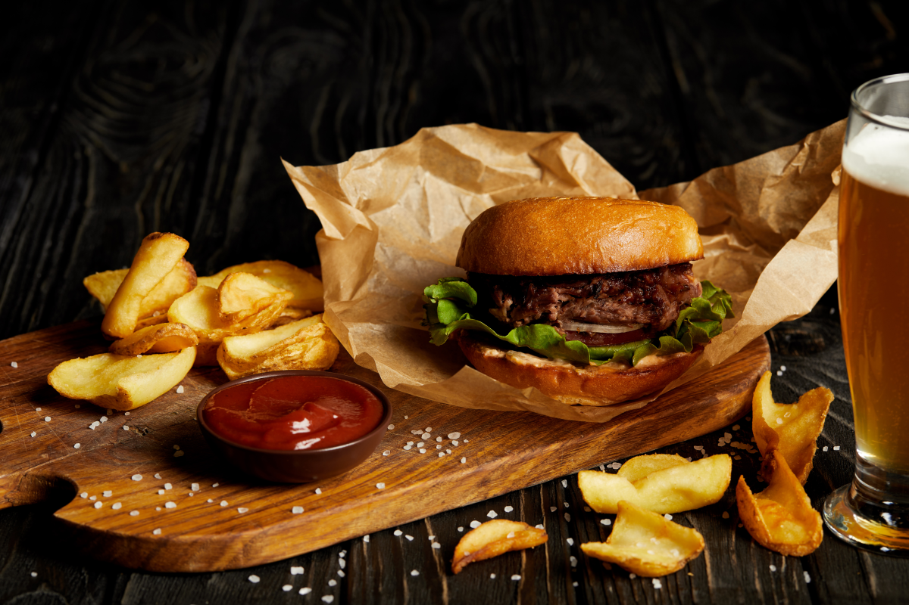

Angus-Burger mit Bacon-Streifen und Kartoffelspalten

45 Min
einfach
27.10.2021
Das sind die Zutaten für dieses Rezept:
Zutaten für:
Menge
Zutaten:
Warenkorb
450
g
Hackfleisch vom Angus-Rind
40
g
Bacon-Streifen
1
Stück
Burger-Brötchen (mit Schwarzkümmel)
4
Stück
Bacon-Streifen
0,5
Stück
Rote, mittelgroße Salat-Zwiebel(n)
0,5
Stück
Reife Fleisch- oder Ochsenherz-Tomate(n)
2
Blatt
Frischer Frisee oder Eisberg-Salat
3
Stück
Mehlig kochende Kartoffeln
100
ml
Barbecue-Sauce (nach Geschmack)
Zubereitung:
ca. 45 Minuten
Gesamtzeit ca. 45
Minuten
- Für den/die Burger-patty(s) mischt Du das Hackfleich, mit Salz, Pfeffer und Mayoran.
Nachdem Du das Fleich bei ca. 200°C kurz angrgrillt hast, legst Du es für weitere 3 Minuten
in einen Bereich mit niedriger Temperatur. Danach belegst Du das/die Burger-Brötchen mit Tomate,
Salat und Zwiebelscheiben. Zum Schluss gibst Du neben dem fertig gegahrtem Fleisch noch einen Schuß
Deiner Lieblingsgrillsauce hinzu und fügst die kross angebratenen Bacon-Streifen hinzu.
- Die Kartoffeln schneidest Du in ca. 2 cm breite Scheiben, bestreichst sie mit etwas Öl lässt Sie im
Ofen für ca 30 Minuten, bei 200°C Hitze garen.